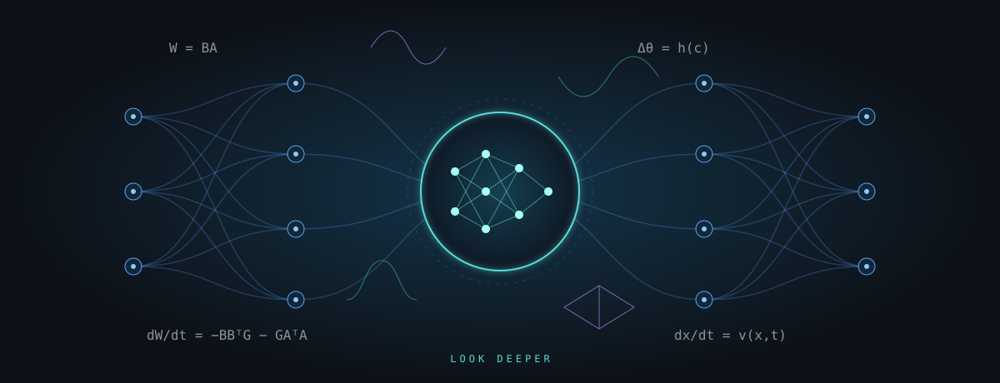

Deep Deep Learning
Understanding the ideas inside the network.

Major ideas. Fundamental questions. The mathematics underneath.
Deep Deep Learning is a graduate, student-led seminar for studying ideas you have heard about and want to understand properly. The candidate pool connects neural tangent kernels, feature learning, Mamba, in-context learning, test-time training, hypernetworks, world models, online continual learning, model merging, mechanistic interpretability, new generative frameworks, graph neural networks, KANs, and the theory of why training works.
Each selected topic gets two academic hours. A session builds from the minimum background to one central research paper and selected recent developments. We work through a derivation, examine an experiment, and ask what remains unresolved. Students lead the presentations and discussion.
Everyone completes one shared pre-reading before each selected meeting. Presenters choose it in consultation with the instructor and announce it one week before class: a tutorial, a short paper or specified sections that take 30–45 minutes. Two guiding questions accompany the reading; each student arrives with one question or point of confusion.
The reading pool is larger than the course. Students and the instructor choose which topics enter the final schedule; unchosen topics are not assigned. Topic selections and presenter assignments are TBD.
Logistics
Choose the topics first; the weekly assignments will follow.
Format
13 planned weekly student-led seminars. Two academic hours per selected topic. No exam.
Topic selection
23 candidate topics with background, a main paper and recent reading. Final selection and order: TBD.
When
Semester, day and meeting time: TBD. The schedule uses week numbers.
Where
Room and delivery mode: TBD.
Registration
Course number, credits and enrollment: TBD.
Preparation
Working knowledge of deep learning, linear algebra, probability, calculus and optimization. Formal prerequisites: TBD.
Shared pre-reading
One required reading per selected meeting, chosen by presenters with the instructor and announced one week ahead. Budget 30–45 minutes; specific readings: TBD.
Assessment
Grading components and weights: TBD. No exam.
One question. Three things to bring.
Every presentation should make a mathematical idea concrete.
01 · One derivation
Explain one central derivation carefully, including its assumptions and the older ideas it builds on.
02 · One decisive experiment
Show an experiment or ablation that tests the explanation, and what the evidence can distinguish.
03 · One unresolved question
Identify a limitation, an alternative explanation, or a next experiment worth discussing.
Explore the topic families
A menu for selecting seminars. Inclusion here does not reserve a week.
Kernels, feature learning & optimization
5 candidates →Topic family 02Sequence models & reasoning
5 candidates →Topic family 03Representations, world models & continual learning
3 candidates →Topic family 04Weight space & interpretability
3 candidates →Topic family 05Generative models
2 candidates →Topic family 06Graphs, symmetry & neural architectures
5 candidates →Course staff & communication
Instructor
Assaf Shocher · Homepage
Contact & office hours
Course contact, forum, office hours and supporting staff: TBD.